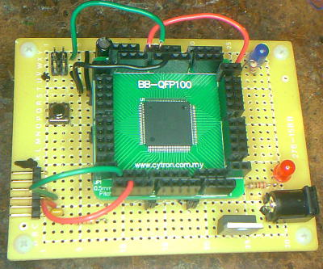

Simple ATXMega128A1U proto-board
QFP-100 breakout board on 'Radio Shack' development board

CPU supports SRAM/DRAM, USB, up to 8 serial ports
Flash from Arduino IDE using 'wiring' protocol (>64k image)
Prev
Next
© 2014 by Bob Frazier and S.F.T. Inc. - all rights reserved